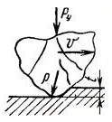
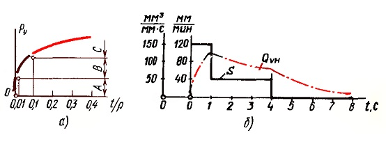

Рабочая поверхность абразивного инструмента не имеет определенных геометрических параметров, присущих металлическому инструменту. Пространственное расположение и распределение режущих граней и поверхностей абразивных зерен разнообразной формы и размеров определяет существенное отличие процесса образования поверхности при абразивной обработке от процесса резания лезвийными инструментами.
При абразивной обработке образуется большое число (до сотни миллионов в минуту) очень малых по размеру стружек: толщина составляет всего несколько микрометров (микрон); ширина больше в 8—15 раз их толщины, а длина зависит от размера зоны контакта и при шлифовании обычно менее 1—2 мм. Абразивные зерна, беспорядочно расположенные на рабочей поверхности круга, срезают стружки с шероховатой поверхности обрабатываемой заготовки. Поэтому сечение срезаемого отдельными зернами металла может практически изменяться в широких пределах и приобретать разнообразную форму и размеры.
В действительности не все абразивные зерна, находяшиеся на поверхности круга, имеют возможность срезать стружку. Активно участвуют в резании только около 10% (иногда меньше или больше) абразивных зерен, расположенных на той части поверхности круга, которая в данный момент находится в контакте с обрабатываемой поверхностью. Остальные зерна либо не имеют фактического контакта с заготовкой, либо только скользят по поверхности и заглаживают шероховатости, образованные предшествующими зернами.
Большое влияние на процесс резания оказывает форма вершин зерен, имеющих различную степень остроты (или округленности). В зависимости от радиуса округления режущих кромок абразивных зерен, глубины их внедрения и молекулярного взаимодействия абразивного и обрабатываемого материалов будет различным характер резания отдельными зернами.
Если глубина внедрения режущей кромки зерна при шлифовании без охлаждения будет не меньше 0,1 радиуса округления вершины, то такое зерно будет производить микрорезание с различной формой стружек (зона С). Такие зерна условно можно назвать режущими.
Если глубина внедрения будет меньше, то такое зерно будет производить пластическое оттеснение материала (зона В). Подобные зерна иногда называют «давящими». В случае, когда глубина внедрения зерна менее 0,01 радиуса округления вершины, происходит упругое оттеснение материала (зона А). Зерна в этом случае условно называют «скользящими». Переходу от упругого деформирования к пластическому и от пластического оттеснения к микрорезанию соответствуют определенные критические нагрузки Ру. В зоне пластического деформирования металл не отделяется от основной массы, а обтекает абразивное зерно и выдавливается в направлении, перпендикулярном скорости резания. Объем оттесненного металла, выдавленного по краям канавки, может быть значительным (до 80% от объема царапины). При увеличении относительного внедрения зерен оттеснение материала сменяется его торможением относительно движущегося зерна, т. е. образованием стружки, которая отделяется от основного металла.
Рабочий цикл шлифования, т. е. процесс съема металла в пределах припуска, осуществляется в три этапа (б). С момента контакта круга с заготовкой на первом этапе происходит процесс постепенного врезания. Действительный съем металла в этот период меньше, чем следовало бы ожидать, если рассчитать его исходя из номинальной поперечной подачи. Это объясняется тем, что при внедрении абразивных зерен в металл появляется сила сопротивления, которая действует на круг со стороны шлифуемого изделия и называется радиальной силой. Под действием радиальной силы в механизмах станка происходит выбор имеющихся зазоров, люфтов и деформация некоторых деталей. В системе станок — круг — заготовка в этот период создается натяг. С увеличением натяга возрастает и съем металла.
Время этапа врезания зависит от режима шлифования, например подачи S на врезание, и от способности системы сопротивляться силам, стремящимся ее деформировать, или, иными словами, от жесткости системы. Жесткость технологической системы станка j определяется отношением илы Ру к величине деформации у (перемещения), вызываемой этой силой: j=Py/y.
После создания определенного натяга в системе устанавливается примерно постоянная интенсивность съема металла. В этот период, называемый установившимся процессом, толщина слоя снимаемого металла примерно соответствует по величине поперечной подаче S (см. кривую Qvh) (б).
Третий период шлифование производится с уменьшенной (см. кривую S) (б) или выключенной поперечной подачей. Интенсивность съема металла убывает, так как глубина врезания абразивных зерен и натяг в системе постепенно уменьшаются. Этот период называется зачисткой или выхаживанием. При выхаживании уменьшается шероховатость шлифуемой поверхности и повышается точность обработки.